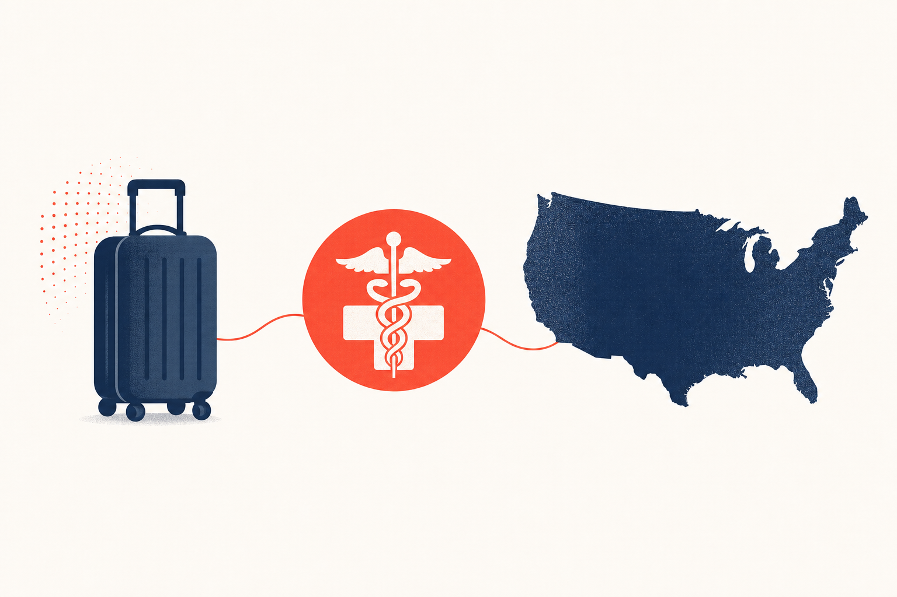

Key Takeaways
- The US healthcare system is not free at the point of care. An uninsured ER visit averages roughly $1,200 to $3,000, urgent care runs $150 to $280, and telehealth is typically $50 to $150, so choosing the right level of care is a financial decision as well as a clinical one.[1]
- Call 911 for life-threatening symptoms: chest pain, sudden severe difficulty breathing, stroke signs (face droop, arm weakness, speech difficulty), major trauma, uncontrolled bleeding, or altered consciousness. The federal No Surprises Act protects insured US patients from balance billing for emergency care regardless of network status.[2]
- Foreign prescriptions cannot be filled at US pharmacies. A US-licensed clinician must write a new prescription, and for chronic non-controlled medications a synchronous telehealth visit is usually the fastest path.[3]
- Foreign visitors may bring up to 50 dosage units of controlled substances into the US for personal use in original labeled containers that include the chemical or trade name and schedule symbol; declare all medications at customs.[4]
- Travelers’ diarrhea attack rates run 30 to 70 percent over a two-week trip abroad. Untreated episodes last 59 to 93 hours; effective antibiotic treatment cuts this to 16 to 30 hours, and combining an antibiotic with loperamide shortens duration by an additional 1 to 2 days.[5][6]
- Under Section 1557 of the Affordable Care Act, healthcare facilities receiving federal funding must provide qualified interpreters at no cost to patients with limited English proficiency; approximately 68 million US residents speak a language other than English at home.[7]
- Heat stroke is a genuine risk for visitors to the American Sunbelt. Mortality approaches 80 percent for classic heat stroke and 33 percent for exertional heat stroke without prompt treatment, and rapid cooling (cold-water immersion first-line) is the single most important intervention.[8][9]

Every year, roughly 62.4 million international travelers visit the United States, with the largest arrival volumes from Western Europe (about 13.1 million) and Asia (about 9.2 million).[10] A meaningful share of those visitors get sick during the trip and end up navigating a fragmented, cash-heavy healthcare system for the first time.
This guide is a physician's attempt to make that navigation less painful. It explains how US care is actually organized, what a visit typically costs, how to get medication when your foreign prescription does not work here, what your language-access rights are, and what to do for the common illnesses that most often send visitors looking for a doctor. Every material claim is cited to a primary source (federal statute, CDC, IDSA, peer-reviewed journal). Nothing in this guide is a substitute for evaluation by a US-licensed clinician when your symptoms are serious.
How the US Healthcare System Actually Works
Before getting into what to do when you get sick, understand this: the US does not have a universal healthcare system. Unlike the UK's NHS, Canada's provincial systems, or most European models, care in the US is delivered by a patchwork of private hospitals, physician groups, urgent-care chains, retail clinics, and telehealth companies. Payment is expected at the point of service unless you carry insurance that specifically covers you in the US. Even Americans with insurance routinely face bills of hundreds to thousands of dollars for a single ER visit.[1]
For an international visitor, this has three important consequences:
- You will be asked to pay upfront or provide a credit card, even for emergencies. Emergency departments must legally screen and stabilize you regardless of ability to pay under the Emergency Medical Treatment and Labor Act (EMTALA), but they will still send you a bill.[11]
- Travel insurance and visitor insurance vary dramatically. Some pay providers directly. Most reimburse you after you pay out of pocket. The CDC Yellow Book explicitly warns that most standard health plans "might not cover the full cost of emergency medical care or medical evacuation" and that supplemental travel plans "vary widely."[12]
- The right level of care can differ from what you would use at home. In much of the world, a general hospital emergency department is the default access point for non-life-threatening illness. In the US, using the ER for a minor problem is expensive and often slower than urgent care or telehealth.
Where to Go: 911, ER, Urgent Care, Telehealth, or Retail Clinic
There are five levels of urgent-care access in the US. Choosing correctly is both a clinical decision and a financial one.
911 (emergency medical services). Call for life-threatening or limb-threatening problems: chest pain, sudden severe difficulty breathing, stroke symptoms (face droop, arm weakness, slurred speech, sudden confusion), major trauma, uncontrolled bleeding, seizures, anaphylaxis, or loss of consciousness. 911 is a free call from any US phone. The ambulance ride itself is not free; ground ambulance can cost $500 to $2,000 or more without insurance, and air ambulance can exceed $50,000.
Emergency department (ER). For genuine emergencies where waiting until morning is unsafe: severe abdominal pain, high fever with confusion, deep lacerations needing repair within hours, suspected fractures with deformity, severe dehydration, severe asthma or COPD flares. Under the No Surprises Act (effective January 1, 2022), insured US patients are protected from balance billing for emergency services regardless of whether the provider or facility is in-network.[2] The law does not eliminate cost for uninsured patients.
Urgent care. Same-day walk-in care for problems that need attention today but are not life-threatening: fevers, minor infections, sprains, minor cuts, UTIs, sore throat, pink eye, mild-to-moderate asthma flares. Cash pricing typically runs $150 to $280 per visit. Hours vary; many urgent-care clinics are open 8 AM to 8 PM, seven days a week.
Telehealth (video visit). For conditions where an in-person exam is not required: prescription refills for stable chronic conditions, uncomplicated UTIs in women, upper respiratory infections, sinus infections, seasonal allergies, minor skin rashes, medication questions. A physician-led telehealth visit typically costs $50 to $150 cash-pay and can be scheduled the same day. Telehealth cannot replace an in-person exam for problems that require palpation, imaging, or lab testing, and it cannot legally prescribe controlled substances in most situations.
Retail clinic (CVS MinuteClinic, Walgreens, etc.). Nurse-practitioner-led walk-in care at pharmacy chains. Limited scope but useful for vaccinations, strep tests, flu tests, minor infections, and prescription refills. Pricing is similar to or slightly less than urgent care.
The table below summarises the decision framework.
| Situation | Best access point | Typical cash cost | Why |
|---|---|---|---|
| Chest pain, stroke signs, severe breathing difficulty, major trauma | 911 or ER | $2,000 to $5,000+ | Life-threatening; needs paramedic transport and emergency workup |
| Severe abdominal pain, high fever with confusion, deep laceration | ER | $1,200 to $3,000 | Time-critical evaluation and possible imaging |
| Sprain, moderate laceration, UTI with fever, moderate asthma flare | Urgent care | $150 to $280 | Same-day walk-in, on-site X-ray and labs at many locations |
| Uncomplicated UTI, refills, sinus infection, minor rash, medication question | Telehealth | $50 to $150 | No exam required, same-day scheduling, national coverage |
| Vaccination, strep or flu test, minor infection, simple refill | Retail clinic | $100 to $200 | Convenient evening and weekend hours at pharmacies |
What Care Actually Costs Without US Insurance
US healthcare cash prices are opaque, non-negotiable at the register, and frequently sent after the visit rather than billed at the point of service. Here is the honest picture based on published 2019 to 2026 data.
Emergency department. A 2022 KFF analysis of MarketScan claims data (privately insured patients, 2019) found average out-of-pocket spending of $646 per ED visit for insured people, and noted that "almost half of US adults report they have delayed care due to costs."[1] Uninsured cash pricing is much higher. Reported averages for uninsured ER visits without admission are in the $1,200 to $3,000 range in 2024 to 2026 US market data, with a commonly cited figure of $2,715 for a moderate-severity visit.[13] Hospital admission from the ER can rapidly push totals above $10,000.
Urgent care. Cash-pay urgent-care visits generally run $150 to $280 in 2024 to 2026 US market data, with X-rays adding $80 to $200 and additional lab tests $20 to $80 each.[14]
Telehealth. Direct-pay telehealth from board-certified physicians typically runs $50 to $150 per visit, with wide variation by platform. Some pharmacy-adjacent services are as low as $30.
Prescription medications. Generic prices vary widely. Common antibiotics such as amoxicillin, azithromycin, and doxycycline typically run under $20 for a full course at large discount retailers. Brand-name asthma inhalers and biologics can run into the hundreds or thousands per fill. GoodRx and similar discount programs typically produce lower cash prices than insurance copays for common generics.
The federal No Surprises Act, effective January 1, 2022, protects insured US patients from unexpected out-of-network bills for emergency services, air ambulance services, and non-emergency care from out-of-network providers at in-network facilities.[2] This applies to most types of US health insurance, but not to uninsured patients paying cash and not to most visitor-insurance plans, which are separate products regulated as excess or specialty coverage.
Language Access: Your Federal Rights
Approximately 68 million people in the United States speak a language other than English at home, and 8.2 percent of that group speak English less than very well.[7] Under Section 1557 of the Affordable Care Act, as implemented by the 2024 HHS final rule, "every health program or activity, any part of which receives Federal financial assistance" from HHS must provide meaningful access for individuals with limited English proficiency (LEP).[7]
Concretely, this means:
- Qualified medical interpreters must be provided at no cost to the patient at hospitals, clinics, and most healthcare programs that accept Medicare, Medicaid, or federal grant money. This includes virtually every hospital in the US and most outpatient practices.
- Machine translation is limited. The final rule allows machine translation only when it is not being used for a "vital document" or "critical information," and it must be reviewed by a qualified human translator when accuracy is important.
- A family member or friend generally cannot be required to interpret, especially for children, though a patient can choose to use a family member if they prefer.
If you or a family member has limited English proficiency, you can and should ask for a qualified interpreter at any ER, urgent care, or hospital visit. The right applies regardless of immigration status. If interpretation is denied, the HHS Office for Civil Rights accepts civil-rights complaints at hhs.gov/ocr. Telephonic and video interpretation services are contractually available at virtually every US hospital.
Getting a Prescription in the US as a Visitor
For a deeper practical walkthrough (foreign-to-US brand mapping, telehealth bridging workflows, cash pharmacy pricing), see our satellite guide, Running Out of Medication in the US, and Chronic Conditions While Your Parents Visit the US for adult children hosting visiting parents with chronic conditions.
This is the single most common non-emergency reason international visitors seek care. The short version: your foreign prescription cannot be filled at a US pharmacy. A US-licensed clinician must write a new prescription, either for the same medication under its US brand or generic name or, if the exact medication is not available in the US, for the closest FDA-approved equivalent.
The FDA is explicit on this: "patients should not assume that prescription medications that are approved in one country are approved in another. Travelers coming into the US should be aware that their products may be illegal here."[3] Some medications routinely prescribed abroad (certain combination cough syrups, certain non-US-approved formulations, some traditional or herbal preparations) are not available or not legal in the US.
What a US clinician can typically do for a visitor:
- Write a new prescription for a chronic non-controlled medication (antihypertensive, statin, thyroid hormone, oral diabetes medication, most asthma inhalers, most SSRIs, birth control pills) after reviewing your existing regimen. A synchronous telehealth visit is usually sufficient.
- Substitute a US-approved equivalent when the exact foreign brand is not sold here. For example, US pharmacies stock levothyroxine (generic), Synthroid, Levoxyl, and Unithroid brands, but not the European brand Eltroxin.
- Bridge you to a short supply (typically 30 days) until you return home for continuing care.
What a US clinician generally cannot do for a short-term visitor:
- Prescribe controlled substances (opioids, benzodiazepines, stimulants including ADHD medications like Adderall, sleep medications like zolpidem, testosterone) via telehealth without an established in-person relationship. Rules vary by state and by DEA regulation.
- Refill a medication that requires ongoing monitoring (warfarin needing INR checks, complex biologics with prior authorization) without appropriate labs or documentation.
- Prescribe medications not FDA-approved in the US, even if legal in your home country.
What to bring to a US visit for medication continuity:
- A written medication list with generic (not brand) names, doses, and frequency. The CDC Yellow Book specifically recommends this: "Include generic names of all medications because trade names vary widely. Standard dose regimens may vary by country."[12]
- Your original medication bottles or blister packs with legible labels.
- A doctor's letter documenting your conditions, allergies, blood type, and medications (helpful but not required).
Bringing Medications Into the US
US Customs and Border Protection allows visitors to bring reasonable personal-use quantities of prescription medications, but the rules are specific and the penalties for missteps are real.
General rules (all medications):
- Keep medications in their original containers with legible labels.
- Bring a copy of your prescription and, ideally, a doctor's letter listing the medication and condition.
- Declare all medications to Customs and Border Protection at entry.
- Do not pack all medications in checked baggage. TSA recommends carrying "medically necessary liquids, medications and creams in excess of 3.4 ounces or 100 milliliters" in your carry-on bag and removing them for separate screening.[15]
Controlled substances (DEA rules). Per DEA guidance, foreign visitors may bring controlled substances into the US for personal use if all of the following are true:[4]
- The medication is in its original container.
- The label includes the drug's chemical or trade name and schedule symbol, or (if not) includes the pharmacy or practitioner information and a prescription number.
- The quantity does not exceed 50 dosage units per controlled substance for personal use.
- The medication is declared to Customs and Border Protection.
Additional state laws may apply. Some states have tighter rules than federal law on specific substances.
| Medication type | Personal-use rule | Documentation | Where to declare |
|---|---|---|---|
| Non-controlled prescriptions (BP, thyroid, statin, asthma inhaler, birth control, etc.) | Reasonable personal-use quantity for the trip length | Original labeled container plus a doctor’s letter or prescription copy | US Customs and Border Protection at entry |
| Controlled substances (opioids, benzodiazepines, stimulants, sleep aids, testosterone) | Up to 50 dosage units per substance | Original container with chemical or trade name and schedule symbol, or pharmacy info plus prescription number | Declare at US Customs and Border Protection |
| Liquid medications above 3.4 oz (100 mL) | Permitted through TSA as “medically necessary liquids” | Clearly labeled; remove from carry-on for separate screening | TSA checkpoint on domestic legs |
| Cannabis products, some combination cough preparations with codeine, some non-US amphetamine formulations | Generally not permitted; may be Schedule I or II in the US | Do not bring; source a US-legal alternative | Check the DEA website before you fly |
Legal abroad, illegal or restricted here. Certain medications available over the counter or by prescription elsewhere are Schedule I or II in the US and cannot be brought in for personal use. Examples include most cannabis products (federal law still prohibits despite state legalization), some amphetamine formulations sold outside the US, and some combination cough preparations containing codeine at levels that require a US Schedule III prescription. Check the DEA website before traveling if you take a medication that could fall under US scheduling.
Managing Chronic Conditions While Visiting
For a practical playbook aimed at adult children hosting visiting parents (pre-travel checklist, time-zone dosing for insulin and daily medications, levothyroxine timing, and jet lag vs warning signs), see the companion satellite guide, Chronic Conditions While Your Parents Visit the US. For visitors from India specifically (Indian brand names, DEA-controlled Indian medications, and the diaspora clinical risk picture), see Medical Care in the US for Visitors From India. For visitors from Mexico (Mexican brand mapping, Southwest border rules, Section 1557 language rights), see Medical Care in the US for Visitors From Mexico.
For visitors with diabetes, hypertension, thyroid disease, asthma, heart disease, or other chronic conditions, three planning steps prevent most trip-disrupting problems:
- Bring more medication than you think you need. The CDC Yellow Book recommends travelers with chronic conditions carry medications in original prescription bottles with a copy of the prescription and travel with at least a week's worth of extra medication in case of delays.[16]
- Bring a written summary. Diagnoses, current medications with generic names and doses, allergies, blood type, and the name and contact information of your regular doctor at home. This is invaluable if you end up in an ER.
- Know how to access care if something changes. For most stable chronic conditions, a telehealth visit with a US-licensed physician can resolve the common problems that come up on a two or three-week trip: a lost or damaged prescription bottle, a medication you forgot at home, running out sooner than expected, or a new mild symptom that needs a quick clinical opinion.
Among Colorado tourists visiting areas at altitudes of 1900 to 2950 meters, roughly 24 percent report use of long-term medications, per a 2022 NEJM review, meaning most altitude-exposed visitors have at least one chronic condition to consider on top of any acute travel-related illness.[17]
| Situation | Typical US telehealth outcome | When in-person care is needed |
|---|---|---|
| Lost blood-pressure medication (non-controlled) | Prescribe a 30-day bridge of the same or equivalent drug | New severe symptoms (chest pain, syncope): ER |
| Ran out of thyroid medication (levothyroxine) | Prescribe a bridge supply | New symptoms of hypo- or hyperthyroidism warrant labs |
| Asthma inhaler damaged or lost | Prescribe albuterol and controller as needed | Severe flare with wheezing at rest: urgent care or ER |
| Diabetes: lost oral medications | Prescribe a bridge supply | New DKA symptoms (nausea, vomiting, high glucose): ER |
| Lost insulin | May prescribe a short bridge; often better handled in person | Frequently requires urgent care or in-person evaluation, especially for dose changes |
| Stable atrial fibrillation, missing DOAC | Short bridge for apixaban or rivaroxaban | Warfarin needs INR monitoring; use urgent care lab |
| ADHD, benzodiazepines, opioids, testosterone | Generally cannot prescribe without in-person visit | In-person evaluation required in most states |
Specifics depend on state law, individual clinician judgment, and DEA rules for controlled substances.
Travelers' Diarrhea and Food-Related Illness
Travelers' diarrhea (TD) is the most common travel-related illness worldwide, with attack rates of 30 to 70 percent over a two-week period at typical destinations.[18] Untreated, a TD episode typically lasts 59 to 93 hours; effective antibiotic treatment shortens this to 16 to 30 hours, per a 1993 NEJM review by Ericsson.[19] This happens in the US too, particularly to visitors from regions where the microbial exposure profile differs. Common causes in US visitors include norovirus outbreaks (cruises, buffets, hotels), foodborne bacterial infections (Salmonella, Campylobacter, occasional E. coli), and cyclosporiasis outbreaks tied to imported produce.
Severity definitions. The 2017 IDSA and International Society of Travel Medicine graded expert-panel guidelines (Riddle et al., J Travel Med) define TD by function, and the 2016 BMJ clinical review by Barrett and colleagues uses a similar approach:[20][5]
- Mild TD: diarrhea that is tolerable and does not interfere with planned activities.
- Moderate TD: diarrhea that is distressing or interferes with planned activities.
- Severe TD: diarrhea that is incapacitating or prevents planned activities; all dysentery (grossly bloody stools) is considered severe.
First-line management (mild TD): oral rehydration, bland food as tolerated, and loperamide 4 mg initially, then 2 mg after each loose stool up to 16 mg per day. No antibiotic.
Moderate to severe TD. The BMJ 2016 review recommends a short 1-to-3-day antibiotic course, which reduces illness duration from about 3 days to 1.5 days.[5] Azithromycin is now the preferred first-line agent given widespread fluoroquinolone resistance in Campylobacter, particularly from South and Southeast Asian exposures.[5][18] Dosing:
- Azithromycin 1000 mg as a single dose or 500 mg daily for 3 days.[5][18]
- Ciprofloxacin 500 mg twice daily for 3 days.[5] Avoid in South and Southeast Asian travelers because of high Campylobacter resistance.
- Rifaximin 200 mg three times daily for 3 days is an alternative for non-invasive TD (no fever, no visible blood).[5]
Combining an antibiotic with loperamide. A meta-analysis of nine randomised trials cited in the BMJ 2016 review found that adding loperamide to an antibiotic (azithromycin, ciprofloxacin, or rifaximin) produced significantly higher cure rates at 24 and 48 hours than antibiotic alone, provided there are no features of invasive colitis (severe pain, high fever, or visible blood).[5]
Red flags that warrant urgent in-person evaluation:
- Blood in the stool (dysentery)
- High fever (temperature at or above 39°C or 102.2°F)
- Signs of dehydration: dry mouth, minimal urination, dizziness on standing, rapid heart rate
- Symptoms lasting more than 7 days
- Immunocompromised state, pregnancy, age under 3 months or over 70
For most adults with moderate TD and no red flags, a telehealth visit can result in same-day empiric azithromycin, oral rehydration guidance, and a follow-up plan.
One risk to be aware of. Taking antibiotics for TD is associated with subsequent colonization by extended-spectrum beta-lactamase-producing Enterobacteriaceae (ESBL-PE), particularly after travel to South and Southeast Asia.[21] Colonization is usually transient but can affect subsequent antibiotic choices if you later develop a UTI. Reserve antibiotics for moderate to severe cases and mention recent travel to any US clinician who sees you.
Respiratory Infections, Sinus, and Ear Problems
Long-haul flights, hotel HVAC systems, dry cabin air, and dense-crowd exposure at US airports and attractions combine to produce a lot of upper respiratory illness in visitors. Most of it is viral.
What's usually viral (self-limited): sore throat without high fever or exudate; runny nose, congestion, cough lasting up to 10 days; low-grade fever (under 38.3°C or 101°F) for 1 to 3 days; post-flight ear pressure and mild ear discomfort. Management is supportive: fluids, rest, acetaminophen or ibuprofen, saline nasal irrigation, and decongestants if there are no contraindications (uncontrolled hypertension, closed-angle glaucoma). Antibiotics do not help viral URIs.
When to consider a clinician visit (telehealth or urgent care):
- Symptoms lasting more than 10 days without improvement, or initially improving then worsening (the "double-sickening" pattern), which raises the possibility of a bacterial sinus infection or secondary bacterial pneumonia.
- Facial pain over the sinuses with fever and purulent nasal discharge for more than 10 days.
- Ear pain with fever, especially in a child.
- Cough with green or bloody sputum, or shortness of breath at rest.
- Wheezing in a person without a prior asthma diagnosis.
Red flags that warrant urgent in-person or ER care: difficulty breathing at rest, blue lips or fingertips, oxygen saturation below 92 percent on a home pulse oximeter, high fever (over 39.5°C or 103°F) not responding to acetaminophen or ibuprofen, chest pain with breathing or cough, confusion or severe headache with stiff neck.
Most visitors with an uncomplicated URI, sinusitis, or minor ear infection can be evaluated by telehealth and, when appropriate, prescribed a short course of amoxicillin, amoxicillin-clavulanate, or doxycycline.
Urinary Tract and Yeast Infections
Urinary tract infections and vaginal yeast infections are common trip disruptors, particularly among women. Both are highly treatable and both can typically be handled through telehealth in most US states without an in-person exam.
Uncomplicated UTI in women (cystitis). Typical symptoms are burning with urination (dysuria), urinary frequency, urgency, and lower pelvic discomfort. Per the 2010 IDSA and European Society for Microbiology and Infectious Diseases guidelines by Gupta and colleagues, first-line antibiotics for acute uncomplicated cystitis are:[22]
- Nitrofurantoin 100 mg twice daily for 5 days
- Trimethoprim-sulfamethoxazole 160/800 mg twice daily for 3 days (where local resistance is under 20 percent)
- Fosfomycin 3 g as a single dose
A 2018 JAMA randomised trial by Huttner and colleagues, reviewed in BMJ Evidence-Based Medicine, found that 5 days of nitrofurantoin was superior to a single dose of fosfomycin for clinical resolution of uncomplicated UTI, with an average number-needed-to-treat of 8 for symptom resolution.[23] This is why current US and UK practice keeps nitrofurantoin as first-line where susceptibility is preserved, and reserves fosfomycin for resistant organisms or specific tolerability situations. Fluoroquinolones (ciprofloxacin, levofloxacin) are reserved for cases where the above are contraindicated because of resistance and side-effect concerns.
When a UTI needs in-person or ER care: fever above 38°C or 100.4°F, flank pain (suggesting pyelonephritis), nausea and vomiting, visible blood in the urine, symptoms in a man, pregnancy, or symptoms not resolving within 48 hours of starting an antibiotic.
Vaginal yeast infection (vulvovaginal candidiasis). Typical symptoms are itching, burning, and thick white "cottage cheese" discharge. Over-the-counter miconazole or clotrimazole vaginal antifungals (1-, 3-, or 7-day courses) are available at any US pharmacy. For recurrent or severe cases, a US clinician can prescribe oral fluconazole 150 mg as a single dose. Telehealth is appropriate when symptoms are classic and there are no red flags.
Heat Illness in the American Sunbelt
Visitors from cooler climates consistently underestimate US summer heat. This is a genuine cause of hospitalization and death at national parks and popular summer destinations.
A CDC-led retrospective study at Grand Canyon National Park documented 474 nonfatal and 6 fatal heat-related illness cases over a 5-year period, with 90 percent occurring in hikers, a median patient age of 43 years, and 40 percent requiring helicopter evacuation.[24] The highest illness rates were seen in May, when rim temperatures are moderate but the canyon bottom can exceed 120°F (44°C).
Heat exhaustion (typically 38 to 40°C or 100 to 104°F core temperature): fatigue, heavy sweating, headache, dizziness, nausea, muscle cramps, weakness. Management: move to a cool environment, remove excess clothing, drink cool water or oral rehydration solution, apply cool wet cloths. Symptoms typically resolve over 30 to 60 minutes.
Heat stroke (core temperature above 40°C or 104°F with central nervous system dysfunction, whether confusion, agitation, seizure, or loss of consciousness) is a 911 emergency. The 2022 NEJM clinical practice review by Sorensen and Hess reports that mortality approaches 80 percent for classic (non-exertional) heat stroke and 33 percent for exertional heat stroke without prompt treatment.[9] The 2002 NEJM review by Bouchama and Knochel similarly defines heat stroke by the combination of CNS dysfunction and core temperature above 40°C.[8]
Rapid cooling is the single most important intervention. Major society guidelines (the 2022 NEJM review, American College of Sports Medicine, and the National Association of EMS Physicians consensus statement) recommend cold-water immersion as first-line therapy and prioritize cooling in the field before transport when heat stroke is suspected.[9] A 2025 NEJM Evidence review on exertional heat illness noted that in one long-distance-runner cohort, exertional heat stroke was ten times more common than serious cardiac events, meaning many presumed cardiac collapses were actually severe heat illness.[25]
Prevention (CDC guidance):[26]
- Hydrate regularly, not only when thirsty. Add electrolytes for prolonged exertion.
- Avoid strenuous outdoor activity between 10 AM and 4 PM in high-heat regions.
- Wear light-colored, loose-fitting clothing and a wide-brim hat.
- Recognize early warning signs and stop activity immediately.
- Know that diuretics, some blood pressure medications, antipsychotics, tricyclic antidepressants, and some antihistamines all impair heat tolerance.
Popular summer destinations that regularly produce heat-illness visits from tourists include Grand Canyon, Zion, Death Valley, Las Vegas outdoor tours, Phoenix and Scottsdale in July and August, Big Bend, Joshua Tree, Orlando theme parks in July and August, and any Southern city heat wave. Elderly visitors and children are at elevated risk.
High-Altitude Illness in the Rockies
Visitors flying directly into Denver (elevation 5,280 feet), Aspen (7,908 feet), Vail (8,150 feet), Yellowstone (Old Faithful area ~7,300 feet), or similar destinations often develop acute mountain sickness (AMS) within 6 to 24 hours of arrival. AMS is generally mild and self-limited but can escalate to high-altitude cerebral edema (HACE) or high-altitude pulmonary edema (HAPE), both life-threatening.
The 2013 NEJM clinical practice review by Luks and Hackett defines the threshold altitude for high-altitude illness as 2,500 meters (about 8,200 feet), with mild illness occasionally occurring between 2,000 and 2,500 meters in more sensitive individuals.[27] The Wilderness Medical Society 2024 update by Luks and colleagues reaches the same threshold definition.[28]
AMS symptoms (within 6 to 12 hours of ascent above threshold, per NEJM):[27] headache (the defining symptom, often poorly responsive to NSAIDs when severe), nausea or loss of appetite, fatigue, dizziness, sleep disturbance.
Management of mild AMS. Stop ascending. Do not go higher until symptoms resolve. Rest, hydrate, and take acetaminophen or ibuprofen for headache. Consider acetazolamide 125 mg twice daily to speed acclimatization; per meta-analysis this is the lowest effective prophylactic dose.[27] If symptoms worsen despite rest, descend to a lower elevation. A descent of 500 to 1000 meters usually resolves AMS.[29]
Evidence on acetazolamide prophylaxis. A large prospective study cited in the NEJM 2013 review associated acetazolamide use with a 44 percent reduction in the risk of severe high-altitude illnesses.[27] A 2022 randomised trial in NEJM Evidence by Furian and colleagues found that acetazolamide 125 mg in the morning plus 250 mg in the evening reduced the composite of altitude-related adverse health events in healthy adults over 40 years old, with a number-needed-to-treat of 10. In patients with COPD, the same regimen reduced altitude-related events from 73 percent (placebo) to 46 percent (acetazolamide).[30]
High-altitude cerebral edema (HACE): ataxia, severe confusion, or decreased level of consciousness at altitude. Estimated HACE prevalence is 0.5 to 1.0 percent among persons at 4000 to 5000 meters, per NEJM.[27] This is a medical emergency. Immediate descent is the primary treatment. Dexamethasone 8 mg initially, then 4 mg every 6 hours, is a temporizing measure.
High-altitude pulmonary edema (HAPE): shortness of breath at rest, cough (sometimes with pink frothy sputum), fatigue disproportionate to activity, reduced exercise tolerance. HAPE is also a medical emergency; immediate descent is the single most effective treatment. Supplemental oxygen reduces pulmonary-artery pressure by 30 to 50 percent, per NEJM, and nifedipine 30 mg extended-release every 12 hours is an adjunct.[29]
For visitors flying directly to Denver from sea level with plans to ski at 9,000 to 12,000 feet the next day, a pre-travel telehealth consultation for acetazolamide prophylaxis is a reasonable and low-cost preventive step. Acetazolamide is a sulfa-related medication but is generally safe in patients with mild sulfa allergies (excluding severe hypersensitivity).
When Your Child Gets Sick on a US Trip
Traveling with kids raises the stakes and lowers the sleep. Pediatric urgent care, retail clinics, and telehealth pediatricians are widely available in US cities. Two specific rules are worth memorizing:
- Any infant under 3 months of age with a rectal temperature of 100.4°F (38.0°C) or higher requires urgent in-person evaluation, usually at an ER. This is the American Academy of Pediatrics standard for febrile young infants, because the risk of serious bacterial infection is substantially higher in this age group and requires labs and possibly imaging.[31]
- Any child with signs of significant dehydration warrants same-day evaluation. Signs include dry mouth, absence of tears when crying, sunken eyes, minimal urine output (dry diapers for more than 6 to 8 hours in an infant), lethargy, or rapid breathing.
Common pediatric travel illnesses and where to go:
- Fever without other symptoms in a child over 3 months, drinking fluids and behaving reasonably normally: telehealth or watchful waiting for 24 hours; recheck if fever persists more than 3 days or the child becomes lethargic.
- Ear pain after a flight: often resolves in 24 to 48 hours with acetaminophen. Persistent ear pain with fever suggests otitis media; urgent care or telehealth for evaluation.
- Vomiting or diarrhea: oral rehydration solution (Pedialyte or equivalent) in small frequent sips is the mainstay. Urgent care or telehealth if the child cannot keep fluids down, has bloody stools, or shows dehydration signs.
- Rashes with fever: urgent evaluation; some infectious rashes require rapid diagnosis.
- Head injury with any loss of consciousness, persistent vomiting, unusual sleepiness, or unequal pupils: ER, not urgent care.
- Any respiratory distress (fast breathing at rest, retractions, blue lips): ER.
Pediatric telehealth is particularly well-suited to fever without red flags, mild URI, minor rashes, and medication questions. Most large pediatric telehealth services can prescribe common pediatric antibiotics, antipyretics, and short courses of asthma medications.
Red Flags: When to Skip Every Other Option and Go to the ER
Some symptoms are 911 or immediate-ER decisions no matter what your insurance situation is. If any of these are present, do not wait, do not try telehealth, and do not delay for logistical reasons:
- Chest pain, especially with sweating, nausea, or radiation to the arm or jaw
- Sudden severe difficulty breathing or blue lips
- Stroke signs: face drooping, arm weakness, speech difficulty (the FAST mnemonic; Time to call 911)
- Sudden severe headache, especially "the worst headache of my life"
- Loss of consciousness, seizure, or new-onset confusion
- Major trauma, uncontrolled bleeding, or suspected fractures with deformity
- Signs of severe allergic reaction (anaphylaxis): facial or tongue swelling, difficulty breathing, widespread rash, low blood pressure
- Severe abdominal pain, especially with fever, vomiting, or inability to pass gas or stool
- Signs of sepsis: high fever with confusion, very fast heart rate, low blood pressure, rapid breathing
- In children: any lethargy that is out of character, any respiratory distress, any age under 3 months with fever, any signs of severe dehydration
The No Surprises Act protects insured US patients from balance billing for emergency care regardless of network status.[2] Emergency departments must legally screen and stabilize you regardless of ability to pay. Neither of these fully solves the cost problem, but neither should keep you from calling 911 for a life-threatening symptom.
Frequently Asked Questions
Rarely. Most national health systems, whether the UK's NHS, Canada's provincial plans, or most European systems, do not pay for care outside their country. Travel insurance and dedicated visitor-insurance policies are separate products designed for this. Check your policy documents before you leave home and confirm whether the policy pays providers directly or reimburses you after you pay.
Under EMTALA (the Emergency Medical Treatment and Labor Act), any hospital with an emergency department that participates in Medicare must medically screen every patient who arrives with an emergency and stabilize any emergency condition regardless of ability to pay. You will still receive a bill afterward, and it can be substantial. EMTALA does not apply to urgent care clinics or telehealth.
Generally no. A US pharmacy requires a prescription from a US-licensed clinician. A telehealth visit is usually the fastest way to obtain a new US prescription for a non-controlled medication you already take at home.
Telehealth typically runs $50 to $150 cash-pay. Urgent care runs $150 to $280 before add-ons such as X-ray or labs. A retail clinic runs $100 to $200. An ER visit runs roughly $1,200 to $3,000 for uninsured patients without hospital admission, based on 2024 to 2026 US market data.
No. Under federal Section 1557 of the Affordable Care Act, US hospitals and most healthcare programs that receive federal funding must provide qualified interpreters at no cost to patients with limited English proficiency. Approximately 68 million US residents speak a language other than English at home. You have a right to ask for a qualified interpreter in person, by phone, or by video.
Usually not. Controlled substances such as stimulants (Adderall, Ritalin), opioids, benzodiazepines, sleep aids like zolpidem, and testosterone are subject to DEA rules that generally require an in-person evaluation or an established treatment relationship. Rules vary by state. For a short trip, plan to bring your existing supply, up to 50 dosage units per controlled substance per DEA rules for foreign visitors.
A written medication list with generic names, doses, and frequency. Original medication bottles or blister packs. A doctor's letter listing your conditions, allergies, and blood type is helpful but not required. If you have a chronic condition needing ongoing care such as dialysis, complex biologics, pregnancy, or cancer treatment, arrange local care contacts before your trip.
In most cases yes. Physician-led telehealth is available across most US states. The visit typically requires a US phone number for verification, a working smartphone or laptop with camera, and a credit card. Some telehealth services will decline to prescribe when the patient is a temporary visitor with no US address; others will not. Ask the platform before you pay.
Use the red flags in this guide. Chest pain, severe breathing difficulty, stroke signs, severe abdominal pain, loss of consciousness, severe allergic reactions, and any pediatric fever under 3 months of age are ER situations. When in doubt, calling 911 is the safest option; the dispatcher can help triage.
US hospitals and providers routinely offer financial assistance, discounts for cash payment, and payment plans. Nonprofit hospitals are legally required to have financial-assistance policies. If you have travel or visitor insurance, request an itemized bill and submit it to your insurer per the policy instructions. The No Surprises Act allows insured US patients to dispute unexpected out-of-network charges through a federal independent dispute resolution process.
The US pharmaceutical supply chain is one of the most tightly regulated in the world. Licensed brick-and-mortar pharmacies (CVS, Walgreens, Rite Aid, independent pharmacies) dispense FDA-approved medications. Avoid buying prescription medications from unregulated online sellers; the FDA has documented serious counterfeit and contamination issues from unlicensed sources.
A basic travel health kit is reasonable: acetaminophen or ibuprofen, loperamide, oral rehydration salts, an antihistamine, hydrocortisone cream, adhesive bandages, and any chronic-condition medications with a buffer of extra days. The CDC Yellow Book maintains a detailed travel health kit checklist.
References
- Kaiser Family Foundation. Emergency Department Visits Exceed Affordability Threshold For Many Consumers With Private Insurance. December 16, 2022. Available at https://www.kff.org/health-costs/emergency-department-visits-exceed-affordability-threshold-for-many-consumers-with-private-insurance/.
- Centers for Medicare & Medicaid Services. Ending Surprise Medical Bills (No Surprises Act). Effective January 1, 2022. Available at https://www.cms.gov/nosurprises/ending-surprise-medical-bills.
- U.S. Food and Drug Administration. Traveling with Prescription Medications. FDA Drug Info Rounds. Available at https://www.fda.gov/drugs/fda-drug-info-rounds-video/traveling-prescription-medications.
- U.S. Drug Enforcement Administration. Traveling to the U.S. with Medication. Available at https://www.dea.gov/sites/default/files/2026-05/Traveling%20With%20Medication_5.pdf.
- Barrett J, Brown M. Travellers’ diarrhoea. BMJ. 2016;353:i1937. Available at https://pubmed.ncbi.nlm.nih.gov/27094342/.
- Ericsson CD. Prevention and Treatment of Traveler’s Diarrhea. N Engl J Med. 1993;328(24):1821-1827. Available at https://pubmed.ncbi.nlm.nih.gov/8502272/.
- U.S. Department of Health and Human Services, Office for Civil Rights. Language Access Provisions of the Final Rule Implementing Section 1557 of the Affordable Care Act. December 5, 2024. Available at https://www.hhs.gov/sites/default/files/ocr-dcl-section-1557-language-access.pdf.
- Bouchama A, Knochel JP. Heat Stroke. N Engl J Med. 2002;346(25):1978-1988. Available at https://pubmed.ncbi.nlm.nih.gov/12075060/.
- Sorensen C, Hess J. Treatment and Prevention of Heat-Related Illness. N Engl J Med. 2022;387:1404-1413. Available at https://pubmed.ncbi.nlm.nih.gov/36170473/.
- U.S. National Travel and Tourism Office. International Visitor Arrivals to the United States. Available at https://www.trade.gov/national-travel-and-tourism-office.
- Centers for Medicare & Medicaid Services. Emergency Medical Treatment and Labor Act (EMTALA). Available at https://www.cms.gov/regulations-and-guidance/legislation/emtala.
- Hagmann SHF, Norton SA. What To Do When Sick Abroad. CDC Yellow Book, 2026 edition. NCBI Bookshelf. Available at https://www.ncbi.nlm.nih.gov/books/NBK620917/.
- GoodRx. Using the ER for Non-Emergencies Is Expensive: 4 Other Options. Available at https://www.goodrx.com/health-topic/emergency-care/avoid-er-for-non-emergencies.
- GoodRx. Urgent Care and Retail Clinic Cash-Pay Pricing, 2024 to 2026. Available at https://www.goodrx.com/health-topic/emergency-care/avoid-er-for-non-emergencies.
- U.S. Transportation Security Administration. Traveling with Medication. Available at https://www.tsa.gov/travel/frequently-asked-questions/i-am-traveling-medication-are-there-any-requirements-i-should-be.
- Centers for Disease Control and Prevention. CDC Yellow Book: Travelers with Chronic Illnesses. Available at https://www.cdc.gov/yellow-book/hcp/travelers-with-additional-considerations/travelers-with-chronic-illnesses.html.
- Luks AM. Medical Conditions and High-Altitude Travel. N Engl J Med. 2022;387:364-373. Available at https://pubmed.ncbi.nlm.nih.gov/35081281/.
- Connor BA, Leung DT. Travelers’ Diarrhea. CDC Yellow Book 2026. Available at https://www.cdc.gov/yellow-book/hcp/preparing-international-travelers/travelers-diarrhea.html.
- Ericsson CD. Prevention and Treatment of Traveler’s Diarrhea. N Engl J Med. 1993;328(24):1821-1827. Available at https://pubmed.ncbi.nlm.nih.gov/8502272/.
- Riddle MS, Connor BA, Beeching NJ, et al. Guidelines for the prevention and treatment of travelers’ diarrhea: a graded expert panel report. J Travel Med. 2017;24(suppl_1):S57-S74. PMID 28521004. Available at https://pmc.ncbi.nlm.nih.gov/articles/PMC5731448/.
- CDC Yellow Book 2024. Perspectives: Antibiotics in Travelers’ Diarrhea, Balancing Benefit & Risk. Available at https://wwwnc.cdc.gov/travel/yellowbook/2024/preparing/antibiotics-in-travelers-diarrhea.
- Gupta K, Hooton TM, Naber KG, et al. International clinical practice guidelines for the treatment of acute uncomplicated cystitis and pyelonephritis in women: A 2010 update by IDSA and ESMID. Clin Infect Dis. 2011;52(5):e103-e120. PMID 21292654. Available at https://pubmed.ncbi.nlm.nih.gov/21292654/.
- Huttner A, Kowalczyk A, Turjeman A, et al. Effect of 5-day nitrofurantoin vs single-dose fosfomycin on clinical resolution of uncomplicated lower urinary tract infection in women: a randomized clinical trial. JAMA. 2018;319(17):1781-1789. Reviewed in BMJ Evidence-Based Medicine. Available at https://pubmed.ncbi.nlm.nih.gov/29740985/.
- Noe RS, Choudhary E, Cheng-Dobson J, Wolkin AF, Newman SB. Exertional heat-related illnesses at the Grand Canyon National Park, 2004-2009. Wilderness Environ Med. 2013;24(4):422-428. PMID 24119571. Available at https://pmc.ncbi.nlm.nih.gov/articles/PMC4910089/.
- NEJM Evidence Review Article. Exertional Heat Illness in Active Populations. NEJM Evidence. 2025. Available at https://pubmed.ncbi.nlm.nih.gov/42047556/.
- Centers for Disease Control and Prevention. Heat and Health: Clinical Overview. Available at https://www.cdc.gov/heat-health/hcp/clinical-overview/index.html.
- Luks AM, Hackett PH. Acute High-Altitude Illnesses. N Engl J Med. 2013;369:1666-1677. Available at https://pubmed.ncbi.nlm.nih.gov/23758234/.
- Luks AM, Beidleman BA, Freer L, et al. Wilderness Medical Society Clinical Practice Guidelines for the Prevention, Diagnosis, and Treatment of Acute Altitude Illness: 2024 Update. Wilderness Environ Med. 2024;35(1_suppl):2S-19S. PMID 37833187. Available at https://pubmed.ncbi.nlm.nih.gov/37833187/.
- Bärtsch P, Swenson ER. High-Altitude Illness. N Engl J Med. 2001;345:107-114. Available at https://pubmed.ncbi.nlm.nih.gov/11450659/.
- Furian M, Bitos K, Hartmann SE, et al. Acetazolamide to Prevent Adverse Altitude Effects in COPD and Healthy Adults. NEJM Evidence. 2022;1(1). Available at https://pubmed.ncbi.nlm.nih.gov/38296630/.
- American Academy of Pediatrics. Clinical Practice Guideline: Evaluation and Management of Well-Appearing Febrile Infants 8 to 60 Days Old. Available at https://www.aap.org/en/patient-care/infant-fever/.